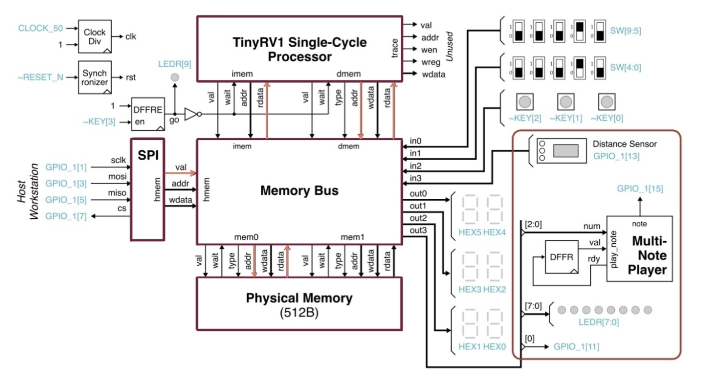
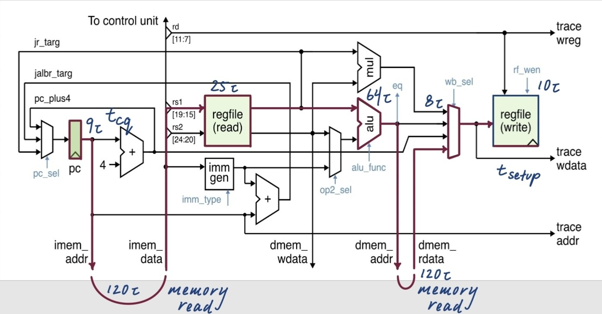
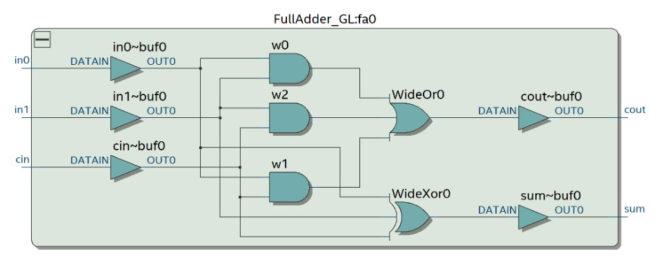
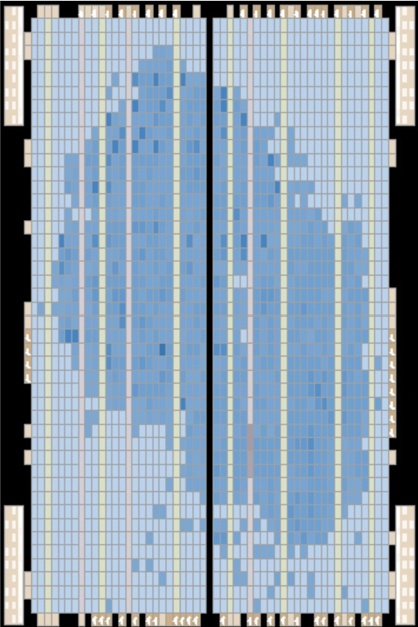
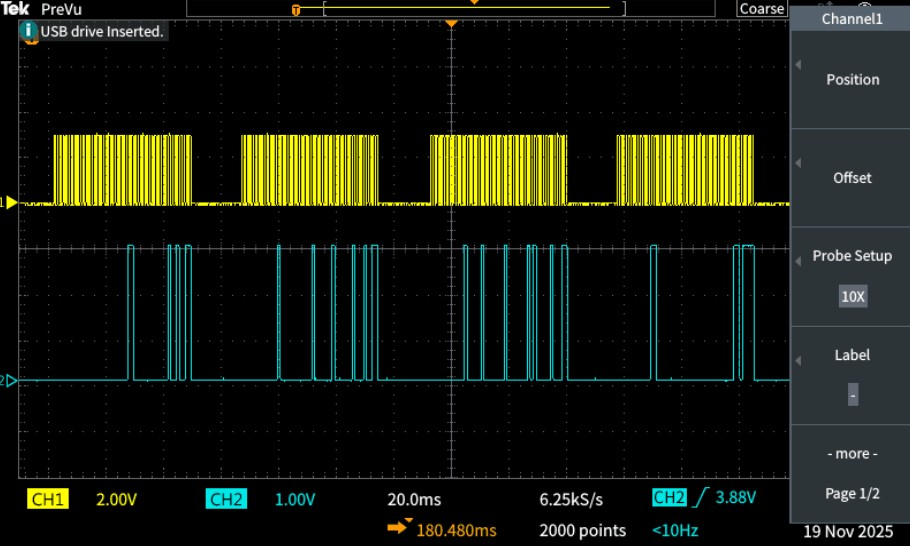
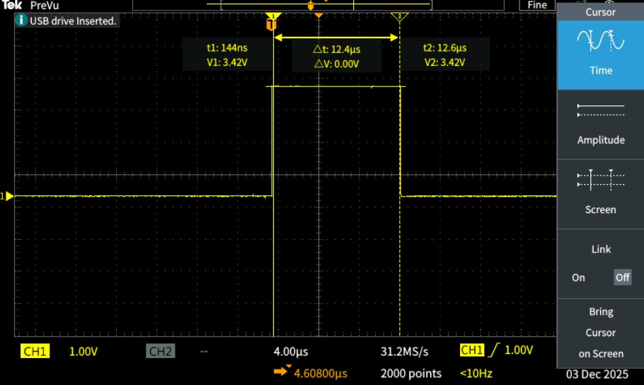
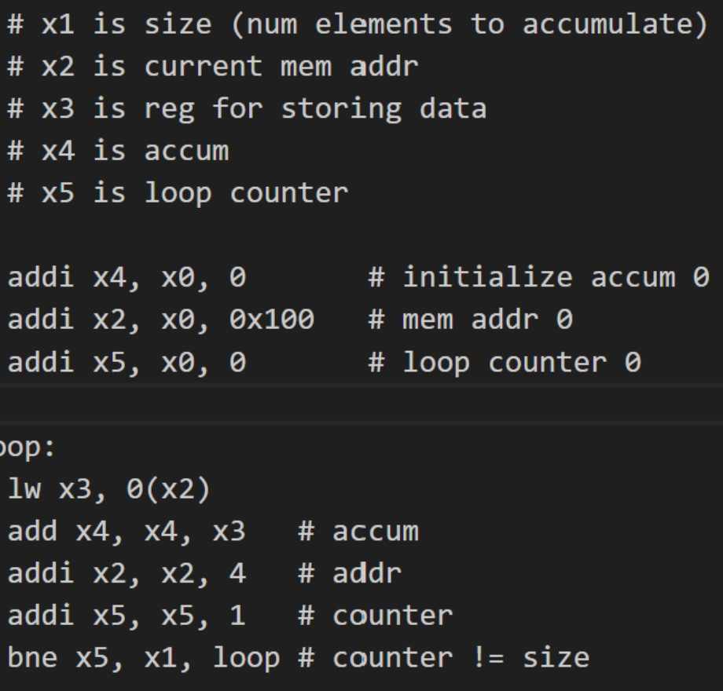
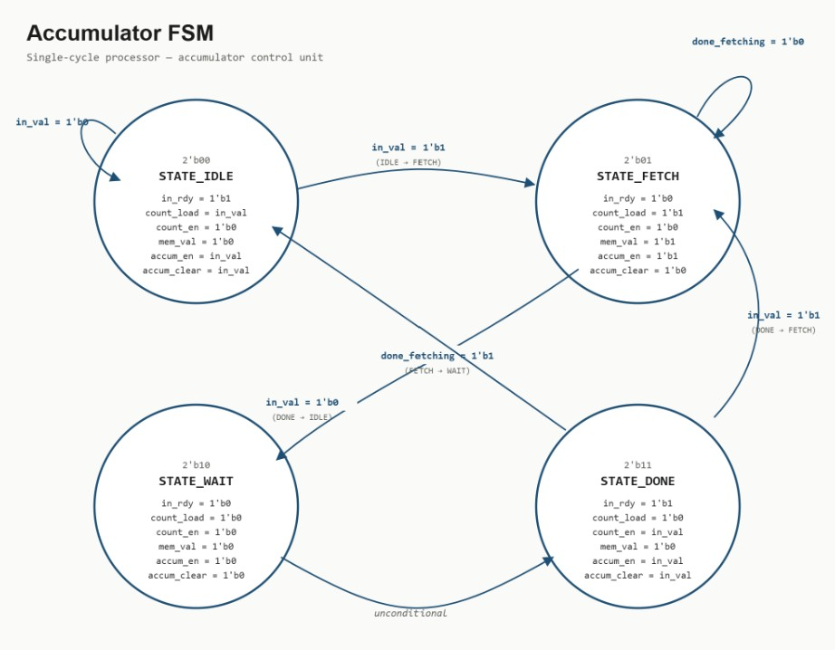

FPGA · DIGITAL LOGIC
TinyRV1 Single-Cycle Processor & Hardware Accelerator
Designed and implemented a subset of the RISC-V ISA (TinyRV1) in a single cycle processor and specialized accumulate accelerator in SystemVerilog, deployed the system to an FPGA, and characterized its timing and execution using Quartus and oscilloscope measurements.

01
System Architecture
I designed and implemented a TinyRV1 single cycle processor in Verilog and synthesized it on an FPGA.
The processor interfaces with instruction and data memory through a shared memory bus and forms part of a larger embedded system containing physical memory, SPI communication, seven-segment displays, switches, LEDs, a distance sensor, and other peripherals.
This system-level integration let me test the processor as part of a complete hardware platform rather than only through simulation.

lw critical path
highlighted and individual delays annotated.
02
Processor Datapath & Critical Path
Because the processor uses a single-cycle architecture, every instruction must complete within one clock period. The maximum clock frequency is therefore limited by the slowest combinational path through the complete system.
The critical path corresponds to a
lw instruction, which must complete instruction fetch,
decode, register-file access, ALU address generation, data memory
access, and register write-back in the same cycle.
SPI →
hmem_val →
Memory Bus →
mem0_addr →
Physical Memory instruction fetch →
instruction decode →
register-file read →
ALU address calculation →
dmem_addr →
Physical Memory data read →
load write-back mux →
register-file write-back
The final system met timing with an 80 ns clock period, corresponding to a maximum clock frequency of 12.5 MHz.
ProcScycle
└── ProcScycleDpath
└── ALU_32b
└── Adder_32b_GL
└── AdderCarrySelect_16b_GL
└── AdderRippleCarry_8b_GL
└── FullAdder_GL

FullAdder_GL module used at the lowest level
of the processor arithmetic hierarchy.
03
Hierarchical RTL Design
I implemented the processor hierarchically in Verilog, constructing larger modules from reusable lower-level components.
The arithmetic path progresses from the top-level processor and processor datapath through the ALU and 32-bit adder, which itself contains carry-select and ripple-carry structures built from gate-level full adders.
This modular approach made the design easier to verify, reuse, and reason about across several levels of abstraction.

04
FPGA Implementation
After synthesis in Quartus, the processor used 9,328 ALUTs and 5,669 dedicated logic registers, corresponding to approximately 34% of the FPGA resources.
The resource footprint reflects the flexibility of a general-purpose processor. In addition to arithmetic logic, the implementation requires instruction handling, register storage, memory interfaces, write-back logic, and control hardware.
Viewing the synthesized placement in the Chip Planner also provided a physical view of how the RTL design mapped onto the FPGA fabric.
05
Hardware Verification
I verified the design through a combination of directed test cases, randomized testing, and X-propagation testing to exercise expected behavior, edge cases, and unintended unknown-state propagation. After functional simulation and synthesis, I validated the complete processor on the FPGA and used oscilloscope measurements to confirm its behavior and timing on physical hardware.



06
Running Software
To validate the complete processor, I wrote assembly programs and executed them directly on the FPGA implementation.
The accumulate benchmark traverses an array stored in memory. Each iteration performs five main operations:
- load one value from memory,
- add the value to the accumulator,
- advance the memory address,
- increment the loop counter, and
- branch while additional elements remain.
Accumulating 31 elements required 159 processor cycles.

07
Accumulate Accelerator
I also implemented the accumulation workload as dedicated hardware to explore the tradeoff between programmability and specialization.
Unlike the general-purpose processor, the accelerator does not require instruction fetch or decode logic. Its datapath contains only the hardware needed for address generation, memory access, accumulation, and state storage.
The finite-state machine controls initialization, memory fetch,
accumulation, and completion while generating control signals
such as
count_load,
count_en,
mem_val,
accum_en, and
accum_clear.
08
Challenges & Debugging
Moving the processor from simulation to physical hardware introduced several challenges that required debugging across RTL, timing, and system-level behavior.
Metastability from Asynchronous Inputs
While testing the processor on the FPGA, I used physical push buttons to reset the system. The processor did not reset reliably - some button presses produced a clean reset, while others resulted in inconsistent system behavior.
By comparing simulation waveforms and failure cases, I traced the problem to asynchronous inputs crossing into the processor's clock domain. I learned that a button transition occurring near a clock edge could violate a flip-flop's setup or hold time and cause the receiving register to enter a metastable state.
I addressed the issue by adding two-stage flip-flop synchronizers to asynchronous inputs. The first stage may enter metastability, but the additional clock cycle gives the signal time to resolve before the second stage exposes it to the rest of the synchronous logic.
Meeting Timing in a Single-Cycle Processor
A single-cycle architecture requires even the longest instruction
path to complete within one clock period. The lw path was
particularly demanding because it traversed instruction memory,
decode and register-file logic, the ALU, data memory, and the
write-back path before reaching the register file.
I used the synthesized timing information to trace this path through the system and identify the components contributing to the critical delay. The final implementation met timing with an 80 ns clock period, or 12.5 MHz.
Debugging Across Simulation and Physical Hardware
Some system behavior could not be fully understood from RTL simulation alone. Once the processor was deployed to the FPGA, communication timing, external signals, and program execution also had to be verified on the physical system.
I used oscilloscope captures of the SPI
SCLK and MOSI signals to inspect
communication at the interface level, and measured the execution
time of the accumulate program directly on hardware.